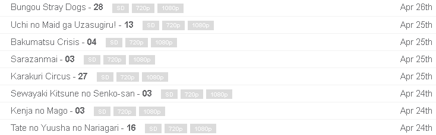
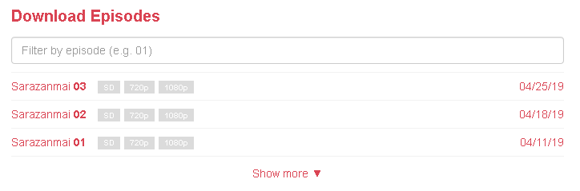

Figure 1.
The index page, previously users could view an episode's info and download options all from this page (in a dropdown).
Figure 2.
This is the page users are directed to when clicking on an episode in figure 1. Not shown are all the advertisements posted around the edges of the actual content (the reason they implemented this inefficient UI in the first place I'd imagine.)
Figure 3.
The actual content. This is the functionality I am going to be trying to replicate. Clicking on an element and receiving a dropdown menu with available download options.